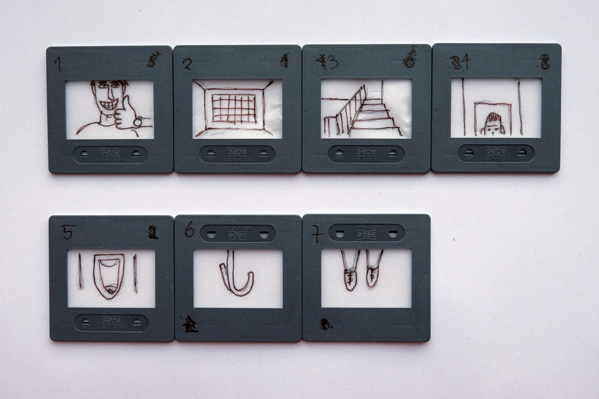

Zwei Jahre ist es her, seit ich das letzte mal die Schulbank drückte. Es ist ein spezielles Gefühl, wieder in diesem Schulhaus zu sein. Denn hier verbrachte ich vier Jahre meiner Ausbildungszeit als Polydesigner 3D. Bei der Rückkehr in diese Schuke kamen somit einige Erinnerungen hervor. Ich wusste nicht was mich erwartet, denn ich besuche nun keine Berufsschule mehr, sondern schlage einen neuen Weg ein. Eine Weiterbildung, mit welcher ich meiner beruflichen Laufbahn ein neues Fenster öffnen will.
Somit nehme ich euch mit auf meine ersten 6 Monate, zurück in der Schule. Und damit "back to school". Dabei dokumentiere ich immer wieder, aus dem Unterricht "Experimentelles Erzählen". Arbeiten, Ereignisse, Fortschritte, Änderungen etc.
Gleich am ersten Tag stellte sich jeder Schüler aus der Klasse vor. Jedoch auf eine, etwas andere, Art. Jeder einzelne schrieb 1-2 Stichwörter auf einen Zettel und stellte diesen anschliessend vor sich auf den Tisch. Nun musste die Klasse und der Lehrer versuchen heraus zu finden, in welcher Verbindung diese Wörter zur betreffenden Person stehen. Der Schüler welcher sich vorstellte, musste dabei schweigen, und durfte das Ganze erst am Schluss auflösen. Meine Beiden Wörter waren "Socken & Rauch". Es wurden Ideen wie "...entwirft eigene Socken in Grau, mit dem Namen Smockey Socks" oder "....raucht aus gebrauchten Socken" etc. Die Erklärung war schlussendlich, dass ich farbige Socken sammle, bzw. eine Schwäche dafür habe und regelmässig Shisha rauche. Durch das die Wörter keine wirklichen Zusammenhänge haben, waren die anderen Schüler ziemlich verwirrt, was wiederum zu kreativen Entschlüssen führte.
Im zweiten Teil teilten wir uns in kleine 3er - Gruppen auf. Die Aufgabe bestand darin, sich gegenseitig, blind, an der Hand, durch das Schulhausareal zu führen. Mit einem Druck am Handgelenk musste das geführte Team-Mitglied die Augen für 10 Sekunden die Augen öffnen und sich das Bild vor Augen merken. Dies wurde pro Person drei mal ausgeführt. Die Bilder wurden danach auf kleine Dias gezeichnet, mit welcher schlussendlich eine Kurzgeschichte / Beschreibung geschrieben werden musste. Wir entschieden uns für eine kurze, klare Beschreibung der Bilder, welche schlussendlich ein tragisches Ende zur Folge hatte.
1. Sam ist gut gelaunt
2. Er wird zu unrecht zu einer lebenslangen Haftstrafe verurteilt
3. Seine Zelle befindet sich im Hochsicherheitstrakt im Untergeschoss.
4. In seiner Zelle angekommen, werden Sam die Handschellen durch die Luke in der Türe abgenommen.
5. Er begibt sich zur Toilette.
6. Als er dabei nach oben blickt, sieht er einen Haken.
Mit den Schnürsenkel seiner Schuhe erhängt er sich.
Inzwischen vergingen wieder 2 Wochen seit des ersten Schultages. Die Klasse bekam für heute als Hausaufgabe, sich Beispiele / Ideen zu möglichen experimentellen Erzählungsarten auszudenken. Es kamen spannende Inputs aus jedem der Klasse aus welchen ein interessanter Austausch entstand. Dazu jedoch später mehr. Denn wir mussten nun, mit Hilfe von kurzen linearen Zeitungsartikel, jeweils in der Gruppe ein Spiel daraus entwickeln / konzipieren. Wir hatten 30 Minuten Zeit. Der Artikel unserer Gruppe hiess "Mutter lässt Kinder im Zug zurück". Nun gilt es, daraus ein Spiel zu kreieren. Wir entschieden uns für ein Single Player, Jump & Run - Spiel. Dazu mussten folgende Punkte beachtet werden.